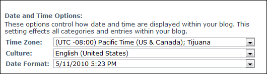
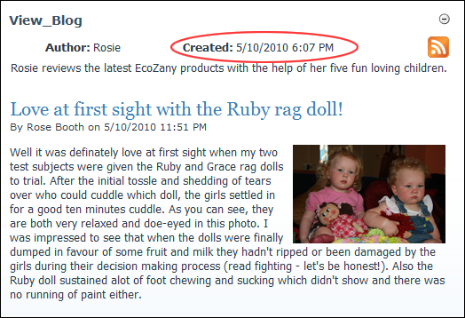

Setting Blog Date, Time and Culture Options
How to set the time zone, culture (language) and date format on a single blog on the Blog module. This can be performed by bloggers on their own blog and by Administrators on any blogs.
- Click the Blog Settings link on the New_Blog module - OR - Click the blog name on the Blog_List module and then select Edit Blog Settings from the View_Blog module actions menu. This opens the Edit Blog page.
- Go to the Date and Time Options section.
- At Time Zone, select your time zone.
- At Culture, select your culture (language).
- At Date Format, select your preferred date or date/time format.

-

Blog Date and Time displayed on the View_Blog module
-
See "Enabling/Disabling a Language"